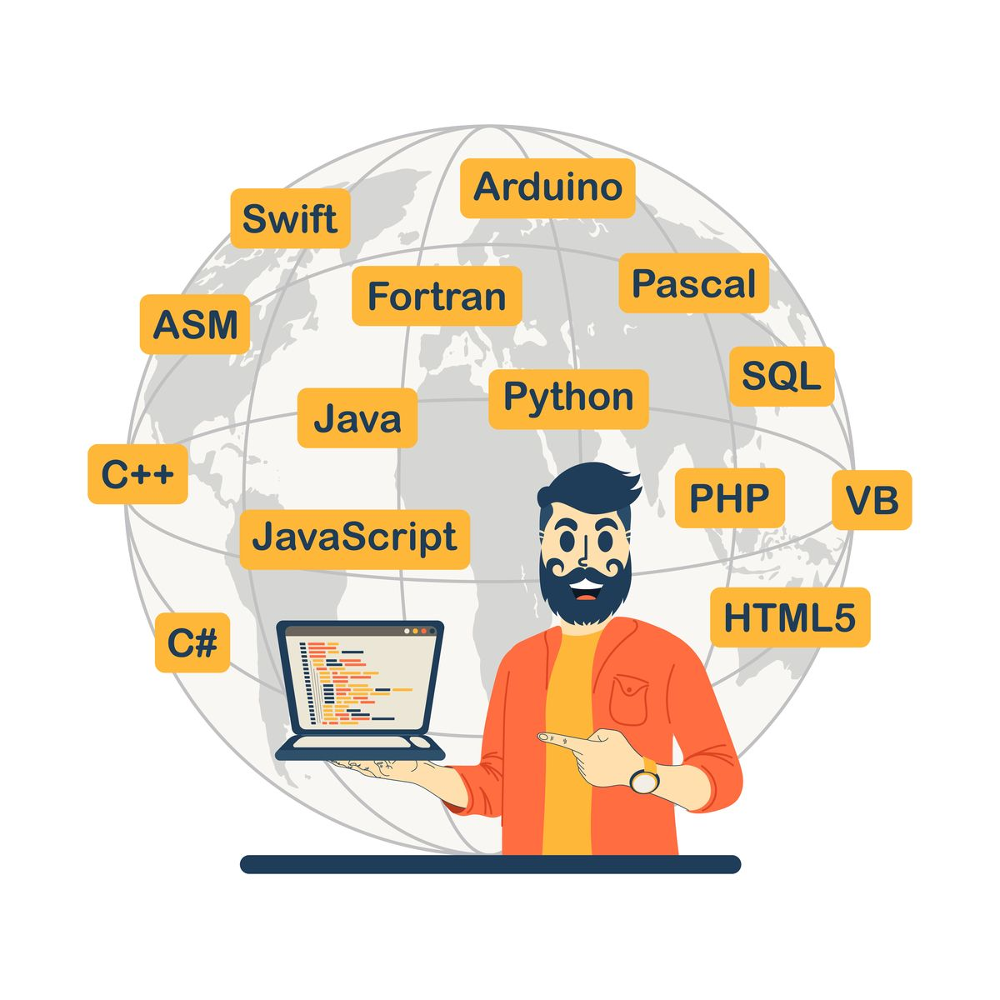

Як обрати мову програмування для початківця
Опубліковано:
Вибір першої мови програмування — важливе рішення для новачка. Розглянемо популярні варіанти...
Основні критерії вибору
- Простота вивчення
- Популярність на ринку праці
- Наявність навчальних матеріалів

Приклад коду на JavaScript
function greet(name) {
return `Вітаю, ${name}!`;
}
console.log(greet('Студент'));